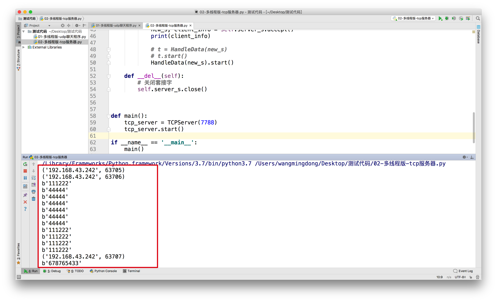
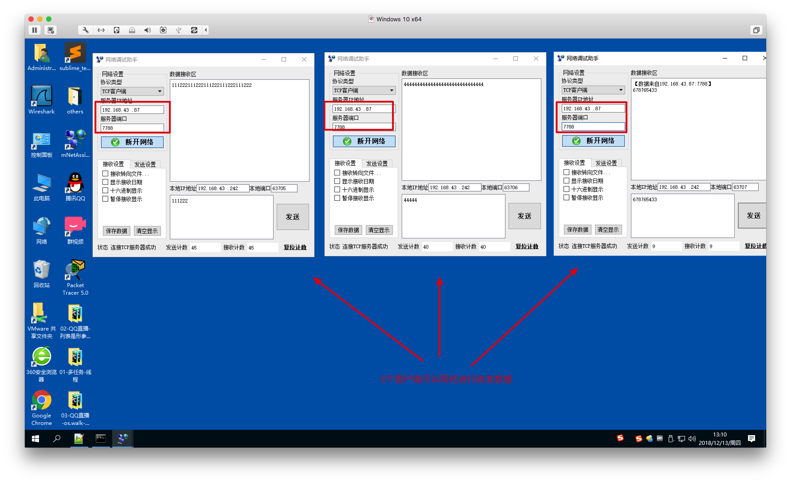

案例：并发TCP服务器
1. 引入
之前编写的TCP服务器虽然可以为多个客户端服务，但是它只能同一时刻为一个客户端服务，只有当这个客户端关闭之后，才可以为下一个客户端服务。为了解决不能同时服务的问题，可以考虑使用多线程来完成TCP的服务器
2. 参考代码
之前的单任务TCP服务器
import socket
# 1. 创建套接字
server_s = socket.socket(socket.AF_INET, socket.SOCK_STREAM)
# 2. 绑定本地信息
server_s.bind(("", 7890))
# 3. 将套接字由默认的主动链接模式改为被动模式（监听模块）
server_s.listen(128)
# 4. 等待客户端进行链接
new_s, client_info = server_s.accept()
print(client_info)
# 5. 接收/发送数据
while True:
recv_content = new_s.recv(1024)
if len(recv_content) != 0:
print(recv_content)
else:
new_s.close()
break
# 6. 关闭套接字
server_s.close()
并发TCP服务器
import socket
import threading
class HandleData(threading.Thread):
def __init__(self, client_socket):
super().__init__()
self.client_socket = client_socket
def run(self):
# 接收/发送数据
while True:
recv_content = self.client_socket.recv(1024)
if len(recv_content) != 0:
print(recv_content)
self.client_socket.send(recv_content)
else:
self.client_socket.close()
break
def __del__(self):
self.client_socket.close()
class TCPServer(threading.Thread):
def __init__(self, port):
# 调用父类的初始化方法
# threading.Thread.__init__(self)
super().__init__()
# 创建套接字
self.server_s = socket.socket(socket.AF_INET, socket.SOCK_STREAM)
# 绑定本地信息
self.server_s.bind(("", port))
# 将套接字由默认的主动链接模式改为被动模式（监听模块）
self.server_s.listen(128)
def run(self):
# 等待客户端进行链接
while True:
new_s, client_info = self.server_s.accept()
print(client_info)
# t = HandleData(new_s)
# t.start()
HandleData(new_s).start()
def __del__(self):
# 关闭套接字
self.server_s.close()
def main():
tcp_server = TCPServer(7788) # 7788表示TCP要绑定的端口
tcp_server.start()
if __name__ == '__main__':
main()
运行效果
服务器端：

客户端：

3. 小结
- 可以通过定义一个新的类，继承threading.Thread的方式创建线程
- 创建这个线程对象的时候，可以像使用普通的类一样，给它的
__init__方法创建参数 - 在
__init__方法中通过super().__init__()调用被覆盖的父类方法，能够保证父类需要进行的准备工作能够正常执行 - 可以在
__del__方法中调用close()关闭套接字